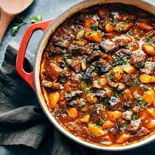

Pot stew recipe

Here's a very brief overview of what you can expect when you make homemade potstew
- 1 tablespoon butter
- 1 pound beef chuck, cut into 1-inch cubes
- 4 Yukon Gold potatoes, cubed
- 1 ½ cups mushrooms, halved
- 1 onion, cut into 6 wedges
- 2 carrots, cut into 1/2-inch thick slices
- 2 cloves garlic, minced
- 3 cups beef broth
- Gather all ingredients
- Turn on a multi-functional pressure cooker (such as Instant Pot) and select the Sauté function. Melt butter in the pot. Cook beef chuck cubes in batches until browned on all sides, about 5 minutes per batch
- Return all beef chuck cubes to the pot. Add potatoes, mushrooms, onion, carrots, and garlic; cover with beef broth. Stir in Worcestershire sauce, tomato paste, salt, pepper, and rosemary.
- Layer the lasagna according to the recipe instructions
- Cover with foil and bake
- Let the lasagna rest before serving